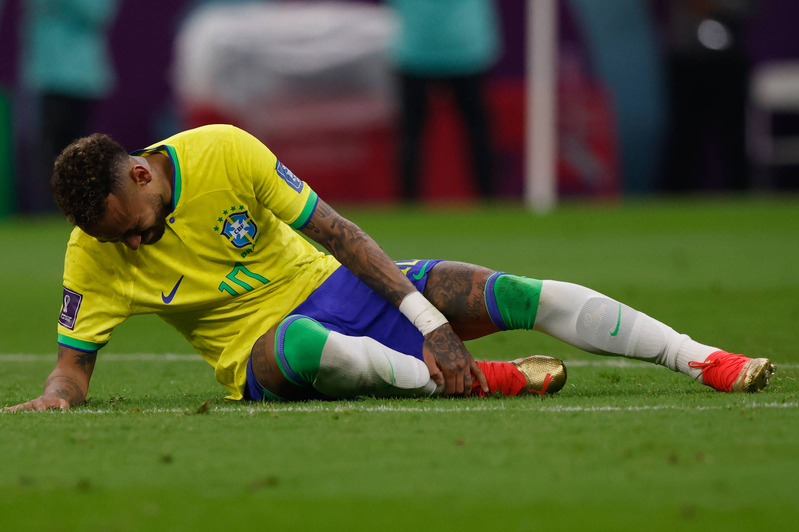
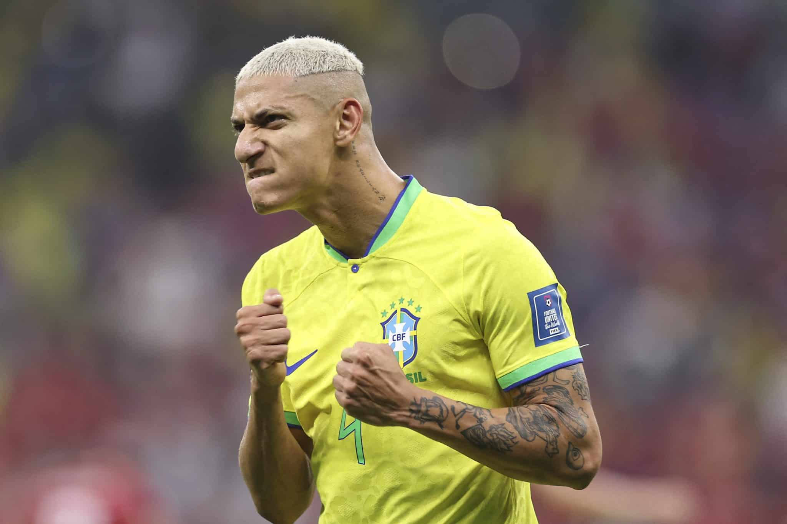
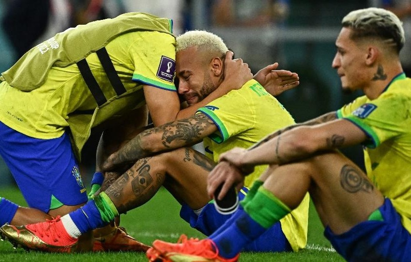
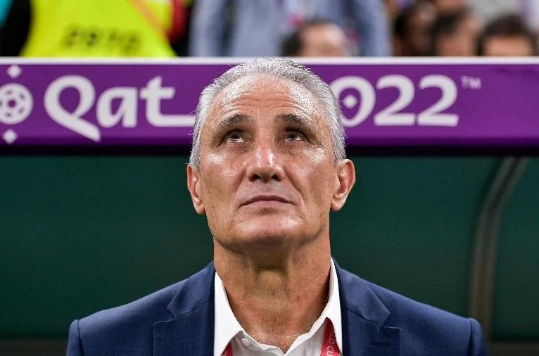

Brasil divulga convocados da Copa 2022
O técnico Tite anunciou os jogadores que representaram o país na Copa do Mundo FIFA 2022

Richarlison brilha na estreia com golaço
Brasil vence Sérvia por 2 a 0 no primeiro jogo da Copa do Mundo 2022

Lesão de Neymar preocupa torcida
Neymar sofreu lesão no tornozelo na fase de grupos e ficou fora de partidas importantes da competição
Dança vira comemoração do Brasil contra a Coreia do Sul
Gol contra a Coreia do Sul é marcado por dança dos jogadores nas oitavas de final
Brasil vence Coreia do Sul no quarto jogo
O placar 4 a 1 foi construído com gols de Vinícius Júnior, Neymar, Richarlison e Paquetá

Richarlison vira “Pombo”
O atacante ganhou ainda mais destaque na Copa e consolidou o apelido “Pombo” entre os torcedores

Brasil é eliminado pela Croácia nos pênaltis
Após empate e decisão nas penalidades, o Brasil se despediu da Copa do Mundo nas quartas de final

Tite deixa a Seleção após eliminação
Após a saída nas quartas de final, Tite anunciou o fim de seu ciclo no comando da Seleção Brasileira